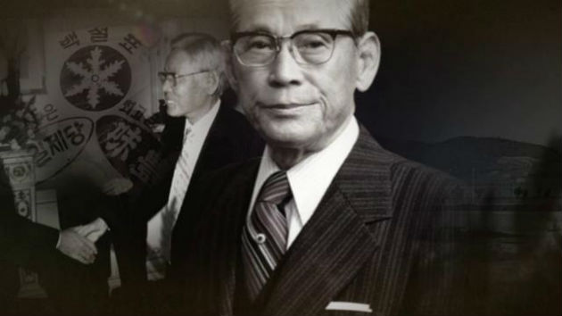

Cuando oímos Samsung que nos viene a la cabeza? televisores, teléfonos móviles… los que se hayan adentrado en la historia y situación de la empresa sabrán que Samsung es algo más. Samsung es El Gigante de Corea del Sur. En este país Samsung tiene hospitales, hoteles y ciudades. Trabaja para educación, para defensa e incluso para el sector aeroespacial. Samsung se ha convertido en un todo y empezó exportando verdura. Sí, verdura. En 1938 Lee Byung-chul, de la provincia de Gyeongsang creó una empresa de exportación y la llamó Samsung (que en coreano significa tres estrellas, de ahí su logo inicial). Al principio, su empresa se dedicaba principalmente a la exportación comercial, en concreto, a la venta de pescado coreano seco, de verduras y de fruta a Manchuria y a Pequín. Sin embargo, en poco más de una década, Samsung contaría con sus propios molinos de harina, sus propias máquinas de confección y sus propios establecimientos de fabricación y de venta, para finalmente convertirse en la moderna corporación global que aún hoy en día lleva el mismo nombre.
 Lee Byung-chul nació en el seno de una familia adinerada que pudo mandarle a la universidad de Waseda en Tokio. Pero éste no terminó sus estudios y tras la temprana muerte de su padre, utilizó parte de su herencia para abrir una planta de arroz en su ciudad natal. La planta de arroz no le dio mucho dinero en un principio así que en 1938 abrió una empresa de transporte de camiones en Daegu, a la que llamó Samsung Trading y que tenía las iniciales tres estrellas de Samsung en su logo. Ésta fue la primera piedra del imperio. Una empresa, que pese a los profundos problemas entre las relaciones de Japón y Corea, consiguió florecer sin frenar en ningún momento las exportaciones. En 1953 Lee Byung-chul fundó Cheil Sugar (actualmente se llama CJ Cheil Jedal) y se trata de una industria dedicada a la alimentación que le dio a Byung el dinero suficiente para seguir fundando empresas que vendieran productos en una gran variedad de sectores, desde el textil, el automovilístico y, por su puesto, el consumo electrónico. En 1961 General Park, se hizo con el control de la empresa y Byung se quedó en Japón y no volvió a Corea del sur. En este periodo Samsung fundó y compró empresas de todo tipo, desde la aseguradora Ankuk Fire & Marine Insurance (1958), que pasó a llamarse Samsung Fire & Marine Insurance en octubre de 1993, hasta la fundación de Joong-Ang Development que pasó a llamarse Samsung Everland y es uno de los múltiples Holdings de la empresa, para diferenciarse, este además tiene un parque de atracciones.
Pero por si algo es conocida Samsung es por sus productos dedicados al consumo electrónico y este es un área en el que la empresa ha profundizado bastante y buscando convertirse en el líder que es ahora. Su camino empezó en 1969, desde su fusión con Sanyo pasando a ser, Samsung-Sanyo Electronics, que se rebautizó después como Samsung Electro-Mechanics en marzo de 1975 y que se fusionó con Samsung Electronics en marzo de 1977. Sanyo, también tuvo un origen peculiar, ya que la empresa japonesa empezó construyendo lámparas para bicicletas. Con ellos fabrica los primeros televisores en blanco y negro. Desde aquí todo fue crecimiento para Samsung. Comenzaron a fabricar microondas, neveras, lavadoras y aire acondicionado. Además mientras tanto seguían fundando filiales dedicadas a la fabricación e investigación y desarrollo de circuitos y maquinarias, como Samsung Techwin y Samsung Fine Chemicals. Desde la fundación de Samsung Aerospace Industries (actualmente, Samsung Techwin) en febrero de 1987, Samsung ha estado desarrollando sus capacidades en el sector aerospacial a una velocidad sin precedentes.
El creciente interés de Samsung por la tecnología dio lugar a la creación de los dos institutos de investigación y desarrollo (I+D) de la empresa, que contribuyeron a ampliar aún más su alcance en los campos de la electrónica, de los semiconductores, de los productos químicos a base de altos polímeros, de la ingeniería genética, de los sistemas de telecomunicación de fibra óptica y de la ingeniería aerospacial, así como en nuevos campos de innovación tecnológica, desde la nanotecnología hasta las arquitecturas de red avanzadas. En 1987, tras la muerte del el presidente fundador de Samsung, su hijo Kun-Hee Lee le sucedió como nuevo presidente. Durante este período, Samsung se propuso el reto de reestructurar sus antiguas actividades y acceder a nuevos sectores, con el objetivo de convertirse en una de las cinco empresas de la industria electrónica más importantes del mundo. Fue en 1992 cuando comienzan a desarrollar el primer sistema de telefonía móvil de la compañía que se convertiría en el primer smartphone de 1999. Cuenta la leyenda, que estaba previsto que estos móviles se lanzaran para 1995, pero que no funcionaran como debieran. Cuando Kun-Hee Lee descubrió el fallo que se producía en sus fábricas de China, mandó quemar todo el inventario. En este tiempo Samsung no solo avanzó en el sector de la telefonía móvil, también se hizo fuerte en todos los campos en los que estaba presente. En 1998 se hacen con la mayor cuota de mercado de las pantallas TFT LCD y un año después desarrollan el primer televisor 3D. Ahora dominan el mercado de la telefonía móvil gracias a su gama Galaxy y a su apuesta por Android. Han puesto su horizonte en el cambio de la mentalidad tecnológica, quieren cambar la forma de pnesar y hacer las cosas y ahora su lema es : Inspirar al mundo, crear el futuro.

RELACIONADOS
#HISTORIA #SAMSUMG #HISTORIA DE LA TECNOLOGÍA #ELECTRÓNICA


Copyright© 1995-2021 Samsung. Todos los derechos reservados.